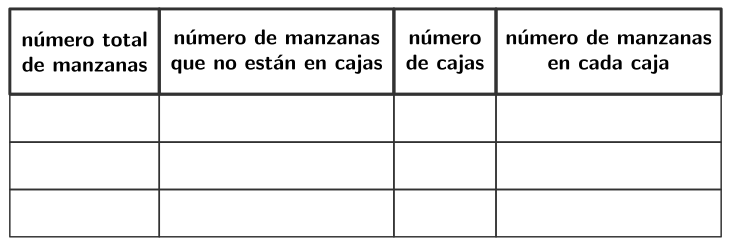
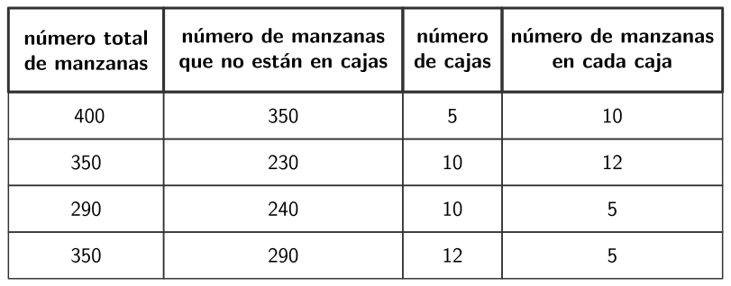

Anteriormente, los estudiantes han representado y resuelto problemas de dos pasos utilizando adición, sustracción, multiplicación y división con números más pequeños. En esta lección, los estudiantes continúan profundizando su comprensión de los problemas de dos pasos a medida que consideran lo que necesitan saber para resolver problemas y reflexionan sobre la relación entre los números en un problema. Los estudiantes escriben ecuaciones con una letra que representa la cantidad desconocida para representar estos problemas.
Preguntas de reflexión.
Revisa tus normas y rutinas. ¿Están promoviendo la participación de todos tus estudiantes? ¿Hay algún ajuste que podrías hacer para que todos los estudiantes hagan matemáticas mañana?
SubsubsecciónCalentamiento (10 mins)
Tiempo recomendado.
10 minutos
Narrativa.
El propósito de esta actividad de calentamiento es generar la idea de que se pueden formular muchas preguntas distintas sobre una situación, lo cual será útil para los estudiantes cuando resuelvan problemas en una actividad posterior. Aunque los estudiantes pueden notar y plantearse diversos aspectos sobre la situación, las preguntas que surjan serán clave para guiar la discusión.
Lanzamiento.
Grupos de 2.
Muestre la situación.
“¿Qué observan? ¿Qué se preguntan?”
1 minuto: Tiempo para pensar en silencio.
Desarrollo de la actividad.
“Discutan con su pareja lo que pensaron.”
1 minuto: Discusión en pareja.
Comparte y anota las respuestas.
Calentamiento86.Observa y pregúntate: Otra vez manzanas.
¿Qué observas? ¿Qué te preguntas?
Un agricultor recogió algunas manzanas. Algunas de las manzanas están empacadas en cajas y algunas no.
Solución.
Los estudiantes pueden observar:
No tenemos suficiente información para responder.
No sabemos cuántas manzanas hay.
No sabemos cuántas cajas se empacaron.
No sabemos cuántas manzanas no están empacadas en cajas.
Los estudiantes pueden preguntarse:
¿Con cuántas manzanas se empezó?
¿Cuántas cajas hay?
¿Cuántas manzanas hay en cada caja?
¿Cuántas manzanas están por fuera de las cajas?
¿Todas las cajas son del mismo tamaño?
Síntesis de la actividad.
“¿Qué significa que algunas manzanas estén empacadas en cajas y otras no?” (Algunas manzanas están en grupos y otras sueltas en un solo montón grande.)
“¿Qué preguntas podemos hacer sobre esta situación?” (¿Cuántas manzanas recogió el agricultor? ¿Cuántas cajas tenían manzanas? ¿Cuántas manzanas había en cada caja?)
SubsubsecciónActividad 1 (20 mins)
Tiempo recomendado.
20 minutos
Narrativa.
El propósito de esta actividad es que los estudiantes piensen en lo que necesitan saber para resolver problemas de dos pasos. Los estudiantes eligen números que tengan sentido juntos para completar el problema del calentamiento. Articulan las relaciones entre las cantidades en el problema para justificar sus elecciones numéricas. Si los estudiantes encuentran rápidamente una combinación de números que funcione, anímelos a ver si hay otras posibilidades o a escribir una situación con los números que han elegido.
Los estudiantes que no eligen rápidamente un grupo de números que corresponden logran comprender y perseveran en la resolución del problema al considerar la relación entre las diferentes cantidades y las restricciones que eso impone sobre qué números pueden describir la situación (MP1).
Mantenga la situación de la actividad de calentamiento visible.
“Supongamos que todas las cajas que empaca el agricultor tienen el mismo tamaño.”
Desarrollo de la actividad.
“En la actividad se muestra una lista de números. Con su compañero, escojan 4 números que al estar juntos tengan sentido en esta situación. Si encuentran una combinación de números que funcione, pueden buscar otras combinaciones.”
8 a 10 minutos: Tiempo de trabajo en parejas.
Grupos de 4.
“Compartan con otro grupo por qué los números que escogieron tienen sentido.”
2 a 3 minutos: Discusión en grupos pequeños.
Actividad87.Una aventura con manzanas.
Un agricultor recogió algunas manzanas. Algunas de las manzanas están empacadas en cajas y algunas no.
Escoge \(4\) números de la lista que describan correctamente la situación. Úsalos para llenar una fila de la tabla. Prepárate para explicar por qué tiene sentido juntar esos \(4\) números.

Solución.
Ejemplos de respuestas:

Síntesis de la actividad.
Muestre una fila de la tabla parcialmente terminada:
“Si les dieran esta información, ¿cómo encontrarían el número de manzanas que hay en cada caja?” (Podría restar \(152\) del total de \(200\) y dividir el resultado entre \(8\text{.}\))
“¿Qué ecuación podemos escribir para representar la situación de este ejemplo? Usemos una letra para representar la cantidad que no conocemos.”
1 minuto: tiempo para pensar en silencio.
Anote las ecuaciones que los estudiantes escribieron, por ejemplo:
\(\displaystyle (200 - 152) \div 8 = n\)
\(\displaystyle 8 \times n + 152 = 200\)
\(\displaystyle 152 + 8 \times n = 200\)
Acceso a estudiantes con discapacidades.
Acción y Expresión: Internalizar las Funciones Ejecutivas.
Invite a los estudiantes a planear una estrategia, incluyendo las herramientas que utilizarán, para completar la tabla. Si el tiempo lo permite, invite a los estudiantes a compartir su plan con su compañero antes de comenzar.
Apoya la accesibilidad para: Organización, Procesamiento Conceptual.
SubsubsecciónActividad 2 (15 mins)
Tiempo recomendado.
15 minutos
Narrativa.
El propósito de esta actividad es que los estudiantes representen un problema con una ecuación utilizando una letra para la cantidad desconocida y resuelvan el problema. Se debe motivar a los estudiantes a usar cualquier estrategia o representación que tenga sentido para ellos.
La síntesis se enfoca en el razonamiento de los estudiantes para el primer problema. Los estudiantes podrían representar la situación con:
un diagrama de cinta o un diagrama de área
una ecuación que use multiplicación
una ecuación que use división
Si los estudiantes tienen dificultades para comenzar con un problema, anímelos a crear un dibujo o diagrama. Los estudiantes también pueden representar la situación o resolver el problema antes de escribir una ecuación si eso tiene más sentido para ellos. Aunque esta actividad se centra en la práctica independiente, los estudiantes pueden discutir con un compañero si es necesario.
Lanzamiento.
“Ahora vamos a resolver algunos problemas sobre un evento en la huerta de manzanas.”
Encueste a la clase sobre su familiaridad con eventos o actividades en granjas o huertos.
Si los estudiantes están familiarizados, pregunte: “¿Qué cosas pueden ver o hacer en una granja o en una huerta?”
Si los estudiantes no están familiarizados, comparta algunas actividades que podrían realizarse en una huerta. Considera mostrar algunas imágenes de un mercado o de un evento en una huerta.
1 a 2 minutos: Discusión en pareja.
Comparta las respuestas.
Desarrollo de la actividad.
8 a 10 minutos: Tiempo de trabajo individual.
Haga seguimiento de:
La variedad de estrategias que los estudiantes utilizan para resolver o representar cada problema.
Preguntas que tengan todavía o errores comunes y cómo los estudiantes los superan.
Considere preguntar:
“¿Cómo podrían representar eso?”
“¿Qué información conocen que les podría ayudar?”
Actividad88.Días de manzanas.
Tyler y Clare ayudan durante un festival en una huerta de manzanas.
Tyler apila manzanas para vender en el evento. Tiene \(85\) manzanas para apilar. Ya ha hecho \(5\) filas de \(10\) manzanas. ¿Cuántas manzanas quedan?
Escribe una ecuación que represente esta situación. Usa una letra para representar la cantidad desconocida.
Resuelve el problema. Explica o muestra tu razonamiento.
Clare ayuda a vender alimentos horneados en el evento. Un cliente compra \(8\) brownies que cuestan \(\$3\) cada uno. Clare mete ese dinero en la caja del dinero y ahora hay \(\$125\) en la caja. ¿Cuánto dinero había en la caja antes de esa compra?
Escribe una ecuación que represente esta situación. Usa una letra para representar la cantidad desconocida.
Resuelve el problema. Explica o muestra tu razonamiento.
En el mercado de la huerta había \(200\) tarros de puré de manzana para la venta. Al final del evento, se habían vendido \(184\) tarros. El resto de los tarros se repartió por igual entre 4 personas que trabajan en la huerta. ¿Cuántos tarros de puré de manzana recibió cada persona?
Escribe una ecuación que represente esta situación. Usa una letra para representar la cantidad desconocida.
Resuelve el problema. Explica o muestra tu razonamiento.
Solución.
\(85 - (5 \times 10) = a\) o \((5 \times 10) + a = 85\)
Elija estudiantes que hayan usado distintas estrategias para explicar sus respuestas y razonamientos en cada problema.
Desarrollo de lenguaje matemático.
MLR8 Apoyo a la discusión: Antes de resolver los problemas, invite a los estudiantes a comprender las situaciones. Monitoree y aclare cualquier pregunta sobre el contexto.
Avances: Leer, Representar.
SubsubsecciónSíntesis de la lección (10 mins)
“¿Qué les pareció lo más retador de resolver estos problemas?” (Hay que tener en cuenta mucha información. Me cuesta entender cómo se relacionan todos los números entre sí.)
“¿Qué ideas tienen para superar esos retos?” (Dibujar un diagrama y etiquetarlo con los números que conocemos, leer el problema cuidadosamente y representarlo, organizar lo que sabemos y no sabemos en una tabla.)
“¿Cómo supieron si su respuesta tenía sentido?” (Usé el número en el problema e hice las operaciones para comprobar si tiene sentido. Hice una estimación primero para tener una idea de qué tan grande debería ser la respuesta.)
Preguntas de comprensiónActividad de cierre (5 mins)
Actividad de cierre89.Las manzanas en el puesto de la huerta.
En un puesto de la huerta de manzanas hay \(225\) manzanas. Hay 165 de esas manzanas que no están en cestas. El resto de las manzanas están en \(6\) cestas, cada una con el mismo número de manzanas. ¿Cuántas manzanas hay en cada cesta?
Escribe una ecuación que represente esta situación. Usa una letra para representar la cantidad desconocida.
Resuelve el problema. Explica o muestra tu razonamiento.
\(10\) manzanas. Ejemplo de respuesta: Resté \(165\) de \(225\) para encontrar cuántas manzanas hay en las cestas. Eran \(60\) manzanas. Sé que \(6 \times 10\) es \(60\text{,}\) así que habría 10 manzanas en cada cesta.
Posibles errores.
Los estudiantes no encuentran una solución al problema.
Acciones para apoyar el aprendizaje.
Antes del calentamiento del día siguiente, regresa al calentamiento y trabaja en grupos pequeños para hacer correcciones.